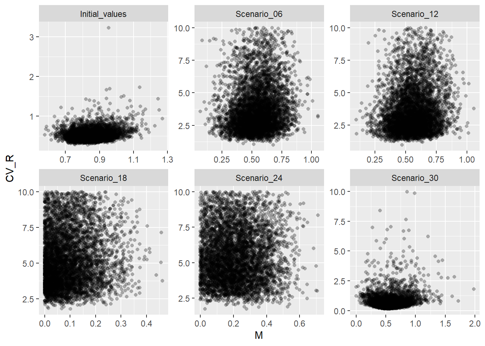
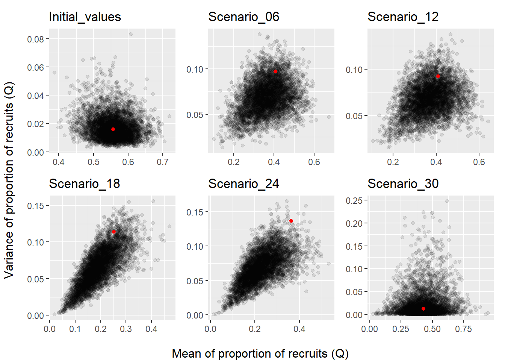
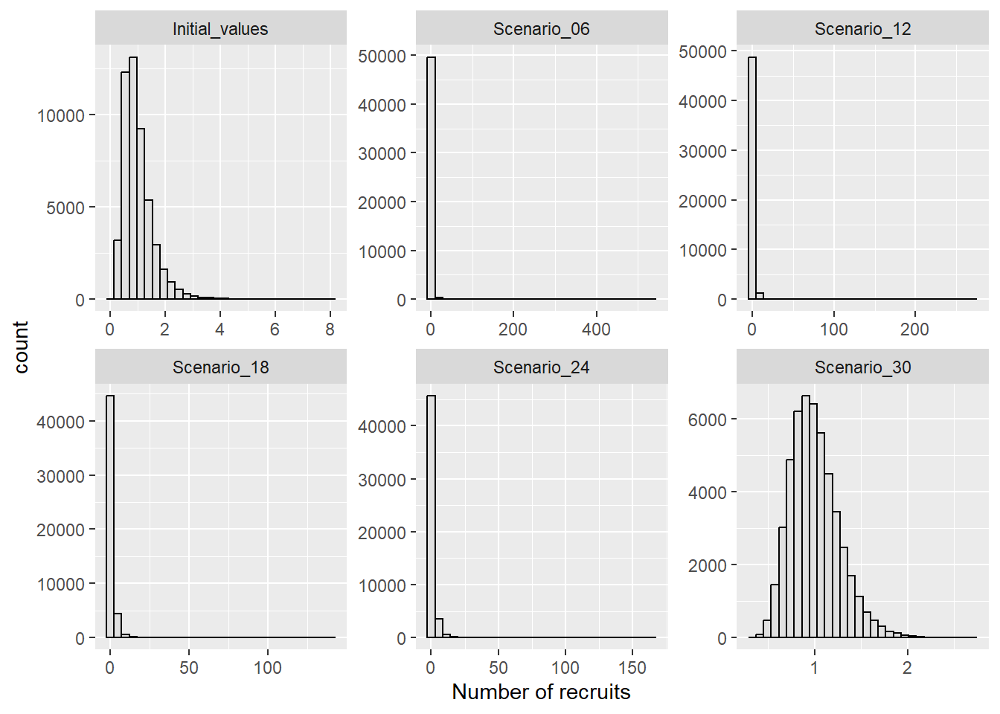

1 Simulation of Recruitment Variability and Natural Mortality
Introduction
Yearly recruitment (\(R\)), the number of young individuals that enter the population every year, and annual natural mortality (\(M\)), expressing the fraction of the population dying each year from any non-fishing causes (e.g. disease, competition, predation, etc.) are key governing parameters in population dynamics models.
Due to challenges in obtaining reliable estimates of krill biomass (and hence numbers) at recruitment, krill recruitment modelling is usually based on estimates of the proportion of recruits in the population. This method, commonly referred to as the Proportional Recruitment (PR) model, was proposed by de de la Mare (1994) and later expanded by Pavez et al. (2021).
This approach is part of the GRYM framework and was developed by de la mare and subsequently expanded in pavez et al to address shortcomings in the way variability was being modelled.
krill population modelling
Methods currently used for the assessment of Antarctic Krill apply
The aim here is to generate random draws of recruitment variability (expressed as coefficient of variance, \(CV_R\)) and annual natural mortality (\(M\)) parameters under different scenarios of Proportional Recruitment (PR).
The six PR scenarios considered here are identical to those applied in Maschette et al. (2021), where each scenario consists of a given set of input parameters
consists of the mean a standard deviation of proportional recruitment calculated from a different choice of research survey time-series,
For further
different combination of survey(s), time-series and
given survey time-series and/or recruitment length cut-off point
a subset of those applied in Maschette et al. (2021), with each scenario consisting of proportional recruitment estimates obtained from a different time-series of survey data.
PR scenarios considered
here are a subset of those applied in Maschette et al. (2021), with each scenario consisting of mean and standard deviation estimates of proportional recruitment calculated from a given survey data.
Note: GRYM defines recruitment as the number of individuals recruited to the fishery (i.e. not to the whole population). Grym applications to krill assume individuals recruit to the modeled stock fishery at age 1.
Set-up
To generate values of \(CV_R\) and \(M\) from proportional recruitment estimates under each scenario, we need to:
Define the within-year natural mortality structure
Choose the quantile function that defines the distribution of proportional recruits
Provide the mean and variance estimates of the proportion of recruits seen in the surveys, and the number of surveys conducted
Provide approximate estimates of \(M\) and \(CV_R\)
Specify the number of parameter sets to generate
For the purpose of this analysis, we are only considering scenarios with different PR estimates, i.e.
. All the remaining GRYM parameters are fixed across scenarios. For more details on the
for more details on PR estimates see Table 1 in Maschette et al. (2021)]
Load PR scenarios
For the purpose of this analysis, we are only considering scenarios with different PR parameters. All other GRYM parameters remain fixed across scenarios (for more details on PR estimates see Table 1 in Maschette et al. 2021)
scens <- read_xlsx(
path = "maschetteetal_scenarios/Grym_parameter_combinations.xlsx"
) |>
rename(Scenario_id = Scenarios) |>
# filter scenarios under consideration
filter(
Scenario_id %in%
c("Initial_values", "Scenario_06", "Scenario_12", "Scenario_18",
"Scenario_24", "Scenario_30")
) |>
select(Scenario_id:`Recruitment group`, `Mean proportional recruitment`:`N. surveys`)# table with PR estimate
scens |>
kbl(digits = 4) |>
kable_styling(bootstrap_options = c("striped"), font_size = 15)| Scenario_id | Source | Recruitment group | Mean proportional recruitment | SD of proportional recruitment | N. surveys |
|---|---|---|---|---|---|
| Initial_values | WG-EMM-2021 | Initial values | 0.5570 | 0.1260 | 17 |
| Scenario_06 | US-AMLR-Data (1992-2011) | Catch weighted PR by survey, strata scaled | 0.4080 | 0.3118 | 20 |
| Scenario_12 | US-AMLR-Data & Russian Survey data combined | Catch weighted PR by survey, strata scaled | 0.4089 | 0.3040 | 21 |
| Scenario_18 | US-AMLR-Data (1991-2011) | Catch weighted PR by haul @36mm | 0.2520 | 0.3380 | 21 |
| Scenario_24 | US-AMLR-Data (1991-2011) | Catch weighted PR by haul @40mm | 0.3630 | 0.3700 | 21 |
| Scenario_30 | Russian survey 2020 | Catch weighted PR by strata, strata scaled | 0.4281 | 0.1112 | 3 |
Tidy-up parameter data for use in simulations.
scens_sim_pars <- scens |>
rename(
mnQ = `Mean proportional recruitment`,
sdQ = `SD of proportional recruitment`,
n_surveys = `N. surveys`
) %>%
select(Scenario_id, mnQ, sdQ, n_surveys)Simulation
Generate draws of \(CV_R\) and \(M\) under each scenario. Note: simulations take quite a while to run so some of the computations performed in this section should only be run in a local R session, i.e. they should not be evaluated during rendering.
Set-up simulation function for parallelization
Parallelization performed at the iteration level, i.e. each parallel node fits one proportional recruitment model given a sequence of random deviates. Each fitted model counts as one simulation, which returns one random draw of M, CV_R, and mean and standard deviation of proportional recruitment.
gen_recs <- function(nsim, mnQ, sdQ, n_surveys, M0, CV0, ref_age, qdist, Msf){
p <- progressor(steps = nsim)
future_map_dfr(
1:nsim,
function(x){
out <- prFit(qdist = qdist, Msf = Msf, mnR = mnQ, vrR = sdQ^2, n = n_surveys,
M0 = M0, CV0 = CV0, r = ref_age)
p()
out
},
.options = furrr_options(seed = TRUE)
)
}Add data with parameters under each scenario.
scens_sim_pars <- scens_sim_pars |>
mutate(M0, CV0, ref_age, qdist = list(qdist), Msf = list(Msf))Generate draws of \(CV_R\) and \(M\) under each scenario
plan(multisession, workers = availableCores()-2)
handlers("progress")
tic()
cvR_M_draws_scen <- scens_sim_pars |>
rowwise() |>
pmap(function(Scenario_id, mnQ, sdQ, n_surveys, M0, CV0, ref_age, qdist, Msf){
cli::cli_alert(glue::glue("Running {Scenario_id}"))
with_progress(
out <- gen_recs(nsim = nsim, mnQ = mnQ, sdQ = sdQ, n_surveys = n_surveys, M0 = M0,
CV0 = CV0, ref_age = ref_age, qdist = qdist, Msf = Msf)
)
cli::cli_alert_success(glue::glue("Finished {Scenario_id}"))
out
})
toc()
plan(sequential)
names(cvR_M_draws_scen) <- scens_sim_pars$Scenario_id
plan(sequential)
# save draws externally
write_rds(x = cvR_M_draws_scen, file = "cvR_M_draws_scen.rds")
cvR_M_draws_scenCheck simulated parameters
Code
cvR_M_draws_scen |>
bind_rows(.id = "scn_id") |>
ggplot(aes(x = M, y = CV)) +
geom_point(shape = 16, alpha = 0.3) +
labs(y = "CV_R") +
facet_wrap(~scn_id, scales = "free")
Summary statistics of simulated \(CV_R\) and \(M\)
cvR_M_draws_scen |>
bind_rows(.id = "scn_id") |>
group_by(scn_id) |>
summarise(mean_M = mean(M), sd_M = sd(M), min_M = min(M), max_M = max(M),
mean_CV_R = mean(CV), sd_CV_R = sd(CV), min_CV = min(CV), max_CV = max(CV))Frequency of draws with mortality equal to zero.
cvR_M_draws_scen |>
bind_rows(.id = "scn_id") |>
filter(M == 0) |>
group_by(scn_id) |>
count()Reverse-check - i.e. simulate survey estimates of PR by running the population model using recruitment series generated from draws of \(M\) and \(CV_R\) (based on code provided in krill’s GRYM workshop).
Code
scens_sim_pars |>
split(scens_sim_pars$Scenario_id) |>
map2(.y = cvR_M_draws_scen, function(scn_pars, scn_draws){
# Simulate observation process for each draw of CV_R and M, i.e. generate
# `n` random age structures for each draw of CV_R and M and estimate mean
# and variance of the proportion of recruits that would be observed in surveys
pr_mn_vr <- scn_draws |>
rowwise() |>
summarize(as.data.frame(t(prSim(qdist, Msf, n = scn_pars$n_surveys, M, CV, r = ref_age))), .groups="drop") |>
as.data.frame() |>
rename(sim_mnQ = mnR, sim_vrQ = vrR)
title <- scn_pars$Scenario_id
# Compare simulated values of mean and variance of proportional recruitment
# with those actually obtained from surveys
ggplot(pr_mn_vr, aes(x = sim_mnQ, y = sim_vrQ)) +
geom_point(alpha = 0.1)+
geom_point(aes(x = mnQ, y = sdQ^2), col = "red", data = scn_pars) +
labs(title = title) +
theme(axis.title = element_blank())
}) |>
wrap_plots() |>
patchworkGrob() |>
gridExtra::grid.arrange(
left = "Variance of proportion of recruits (Q)",
bottom = "Mean of proportion of recruits (Q)"
)
Generate recruitment series from a single draw of proportional recruitment parameters, with a mean of 1 and expected \(CV_R\).
r_series <- cvR_M_draws_scen |>
map(slice, 107) |>
bind_rows(.id = "scn_id") |>
rowwise() |>
mutate(
rec_series = list(recdist(n = 50000, mn = mnQ, vr = vrQ))
) |>
unnest(rec_series)Code
r_series |>
ggplot() +
geom_histogram(aes(x = rec_series), col = "black", fill = "gray88") +
labs(x = "Number of recruits") +
facet_wrap(~scn_id, scales = "free")
Comparing drawn value of \(CV_R\) with summary statistics of the generated recruitment series.
r_series |>
rename(CV_R = CV) |>
group_by(scn_id, CV_R) |>
summarise(
mean_R_sample = mean(rec_series),
CV_R_sample = sd(rec_series)/mean_R_sample,
.groups = "drop"
)Substantial difference between the CV of samples and the expected CV in scenarios Scenario_12 and Scenario_24…